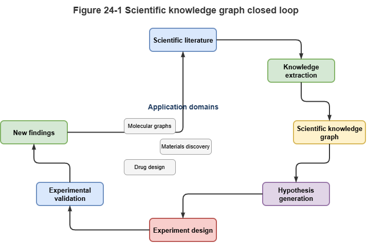
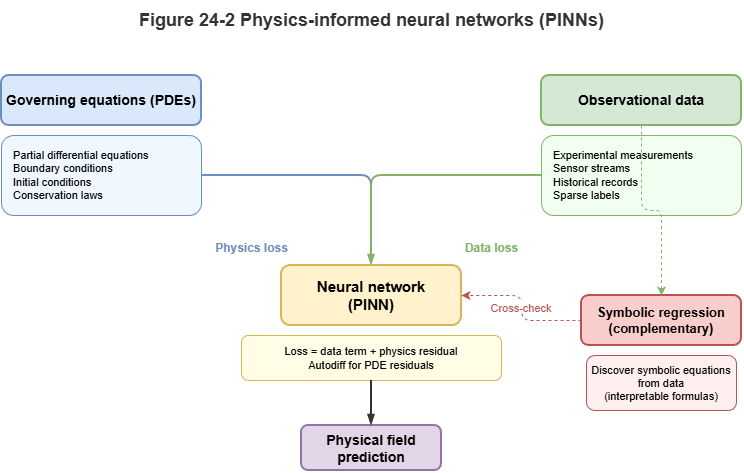
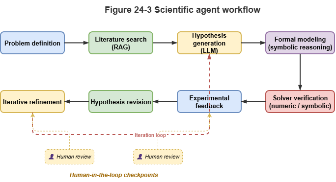

The previous chapter argued that neuro-symbolic methods unify data-driven learning with rules, mechanisms, and accountability in safety-critical industries. This chapter turns to scientific discovery and asks why AI for Science (AI4S) likewise needs a unified treatment of knowledge, mechanism, and learning.
Purely data-driven models struggle in science: data are expensive and scarce, and conclusions must respect physical law—not mere correlation. We discuss how neuro-symbolic reasoning can serve as a core AI4S engine by fusing prior scientific knowledge with neural representation, toward explainable and verifiable discovery.
24.1 Molecular Graphs, Scientific Knowledge, and Interpretable Discovery#
In chemistry, materials, and drug discovery, molecules are naturally graphs (atoms as nodes, bonds as edges). GNNs are the default toolkit—but end-to-end property prediction (toxicity, activity, drug-likeness) alone is insufficient.
Neuro-symbolic methods shift from blind search to rational design:
Scientific knowledge graphs: Encode reaction rules, functional groups, protein–protein interaction (PPI) networks. During prediction, models read 2D/3D structure and, via RAG or graph attention, consult macro-scale biochemical knowledge.
Rule-constrained molecular generation: Generative models (diffusion, RL) for drug design incorporate valence rules, stereochemistry, and synthetic accessibility (SA) as symbolic discriminators—shrinking invalid search space.
Explainable discovery: Standard deep models rarely say why a molecule works. Neuro-symbolic systems emit logical evidence chains (e.g., “Contains pharmacophore A; known pathway shows A inhibits protein B”), giving experimentalists testable mechanistic hypotheses and tightening wet-lab loops.
24.2 Physics Constraints and Mechanism Learning#
If chemistry is “graphs and combinatorics,” physics and mechanics are “continuous equations and conservation.” Fluid dynamics, weather, and quantum systems are governed by PDEs (Navier–Stokes, Schrödinger).
Here physics-informed neural networks (PINNs) and variants shine:
Mechanism as loss penalties: The science-side analogue of “logic as loss” (Chapter 8). Conservation laws regularize the network while fitting observations.
Structural constraints: Symmetry, translation invariance, and equivariance (e.g., EGNN) are baked into architecture so conservation holds by construction—strong few-shot generalization.
Discovering unknown equations: Combined with symbolic regression, networks can recover closed-form laws from data—closer to true machine-driven scientific discovery.
24.3 Knowledge-Augmented Simulation in Complex Systems#
Climate, ocean circulation, epidemiology, and urban low-altitude traffic are complex systems of heterogeneous agents.
Pure numerical simulation hits dimensionality and compute limits; pure deep models fail under extreme events or policy shocks (OOD).
Hybrid surrogate modeling: Symbolic logic, causal graphs, or coarse solvers set macro boundaries and causal skeletons to keep long runs stable; deep nets replace expensive parameterizations (e.g., cloud microphysics).
Knowledge-augmented dynamics: In epidemiology, viral mutation is sequence-level (deep learning); quarantines and travel bans are macro symbolic rules. Neuro-symbolic graph models unify both in one temporal framework for large-scale what-if analysis.
24.4 Prospects Across Disciplinary Science#
Breakthroughs often sit at disciplinary boundaries (quantum biology, materials informatics)—where LLMs and KGs help span breadth.
Science foundation models and multimodal KGs: Following Chapter 22, giant scientific KGs across bio/chem/materials pair with specialized Science-LLMs.
Science agents: Neuro-symbolic stacks become the “brain” of automated labs: interpret intent in natural language, retrieve cross-disciplinary literature on the graph, call quantum-chemistry solvers for verification, actuate robotic arms—closing hypothesis–mechanism–experiment loops.
24.5 From Applications Back to Fundamentals#
From UAM governance we zoom out again: the neuro-symbolic theory in this book is not confined to one engineering vertical.
Engineering and theory co-evolve:
Real constraints drive theory: Millisecond conflict detection and airworthiness-grade certification in UAM pushed TKG partitioning (Chapter 20) and conformal methods under non-IID data (Chapter 15).
Algorithms generalize: Spatiotemporal equivariant graph attention for dense UAV interaction transfers to multi-atom molecular dynamics; LLM-based CCAR compliance explanation can inspire automated ethics review in gene editing.
Starting from the “two-peaks” insight in cognitive science, through symbolic logic, deep representation, dynamic graphs, certification, and deployment, we land on broader scientific discovery. Neuro-symbolic AI is not just a toolkit—it is a pursuit of unifying reason (symbols) and intuition (perception). Through theory and practice, a third path toward AGI that is explainable and trustworthy comes into view.
Chapter Summary#
This chapter covered neuro-symbolic reasoning for AI4S. Molecular and materials discovery gains from scientific KGs, constrained generation, and evidence chains. Physics constraints, equivariant structure, and symbolic regression support mechanism learning and equation discovery. Hybrid surrogates combine neural local approximations with symbolic global structure. Science LLMs, cross-domain KGs, and Science Agents sketch automated discovery. Finally, engineering and theory mutually reinforce via constraints, certification, and dynamic-graph methods.
Key Concepts#
Scientific knowledge graph: Structured networks of concepts, reaction rules, and mechanistic paths.
Mechanism learning: Fitting data while obeying known physical or chemical laws.
Symbolic regression: Recovering analytic expressions or laws from data.
Hybrid surrogate: Neural approximation of expensive pieces plus symbolic skeleton for global stability.
Science agent: Retrieves knowledge, calls solvers, and closes experimental loops.
Discussion Questions#
Why are neuro-symbolic approaches often more convincing than pure data-driven models in discovery?
What roles do PINNs and symbolic regression play in learning vs. discovering mechanisms?
Which methods from low-altitude traffic are most transferable to AI4S?
Case Study#
New molecule screening with mechanistic explanation: A neural model scores candidates on the molecular graph; scientific KG and symbolic rules filter valence and SA violations; the system outputs experimentally testable mechanistic hypotheses.
Figure Suggestions#
Fig. 24-1: Scientific KG, molecular graph learning, and experimental validation loop.

Fig. 24-2: Complementarity of physics-constrained nets and symbolic regression.

Fig. 24-3: Science Agent: hypothesis–solver–experiment feedback.

Formula Index#
Modeling paradigms; no single unified derivation.
Suggested index topics: PINNs, symbolic regression, equivariant structure, knowledge-augmented simulation, Science Agent.
References#
Jumper, J., et al. (2021). Highly Accurate Protein Structure Prediction with AlphaFold. Nature, 596(7873), 583–589.
Raissi, M., Perdikaris, P., & Karniadakis, G. E. (2019). Physics-informed neural networks: A deep learning framework for solving forward and inverse problems involving nonlinear partial differential equations. Journal of Computational Physics, 378, 686–707.
Udrescu, S.-M., & Tegmark, M. (2020). AI Feynman: A Physics-Inspired Method for Symbolic Regression. Science Advances, 6(16), eaay2631.
Gilmer, J., Schoenholz, S. S., Riley, P. F., Vinyals, O., & Dahl, G. E. (2017). Neural Message Passing for Quantum Chemistry. Proceedings of the 34th International Conference on Machine Learning (ICML).
Bronstein, M. M., Bruna, J., Cohen, T., & Veličković, P. (2021). Geometric Deep Learning: Grids, Groups, Graphs, Geodesics, and Gauges. arXiv preprint arXiv:2104.13478.
Karniadakis, G. E., et al. (2021). Physics-informed machine learning. Nature Reviews Physics, 3(6), 422–440.